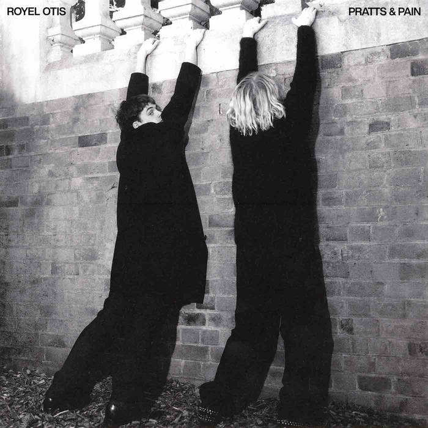

Pratts & Pain is the debut studio album by Australian guitar-pop duo Royel Otis. It was released on 16 February 2024 via Ourness, and debuted at number 10 on the ARIA Albums Chart.The album's release was supported by five singles, starting with "Adored" and "Fried Rice", as well as tour dates around Australia, North America and Europe. It received positive acclaim from critics. A deluxe edition, with two bonus tracks, was released digitally in May 2024.
Lyrics
- [Verse 1]
- Stop heading for the door
- Stop heading for the car you gave me
- I can't apologise
- I can't apologise, you ain't there
- I'm in it for the night
- I'm in it for the night we had here
- You know it don't feel right
- [Verse 2]
- If ever there's a time
- If ever there's a time that ain't fair
- I can't afford a lie
- I can't afford to lay the night down
- You're way too drunk to drive
- You're way too drunk to drive, just stay there
- You know it's just a fight
- I know you wanna ride
- [Bridge]
- Ooh, if you're never getting out of this mood
- Forget you
- Stop you're drinking all your old man's booze
- He'll get you, he'll get you
- [Verse 3]
- Stop looking for a knife
- Stop looking through the drawer, it ain't there
- I can't afford a lie
- I can't afford to lay the night down
- You're way too drunk to drive
- You're way too drunk to drive, just stay there
- You know it don't feel right
- [Outro]
- Stop heading for the door
- Stop heading for the car you gave me
- I can't apologise
- I can't apologise, you ain't there
- I'm in it for the night
- I'm in it for the night we have here
- You know it's just a fight
- I know you wanna ride
- I know you won the right